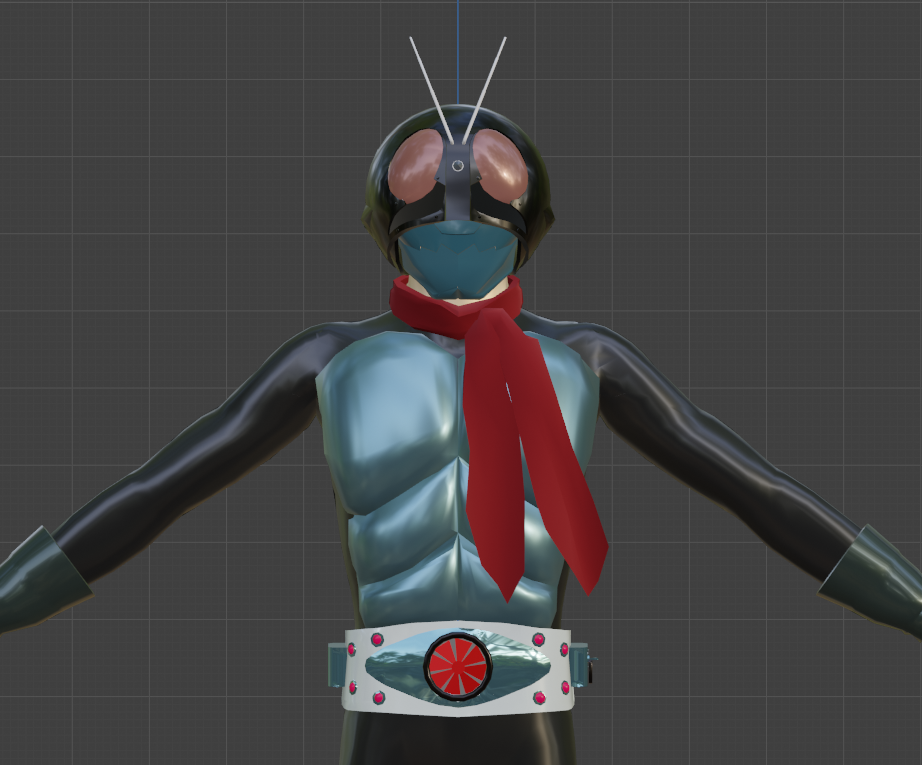
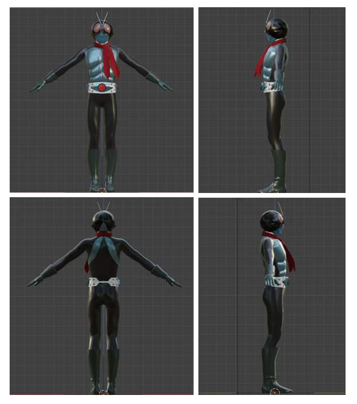
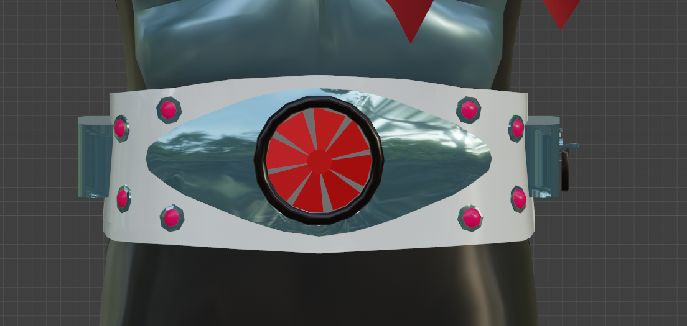
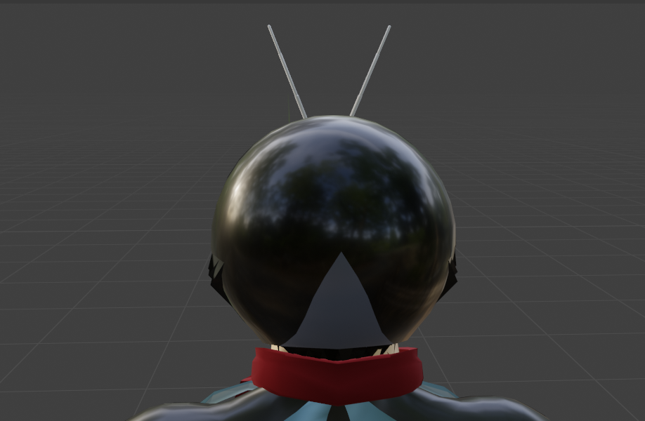
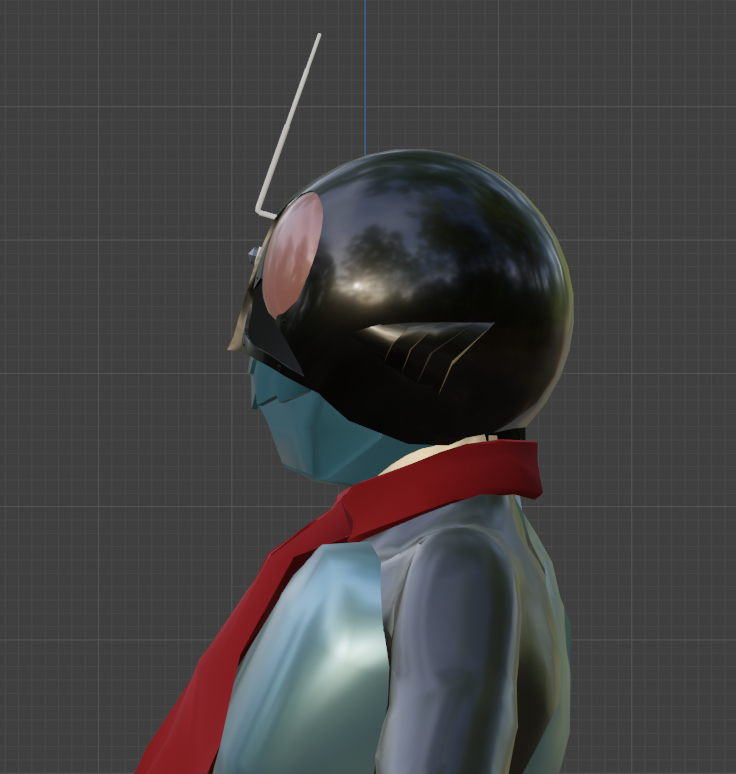
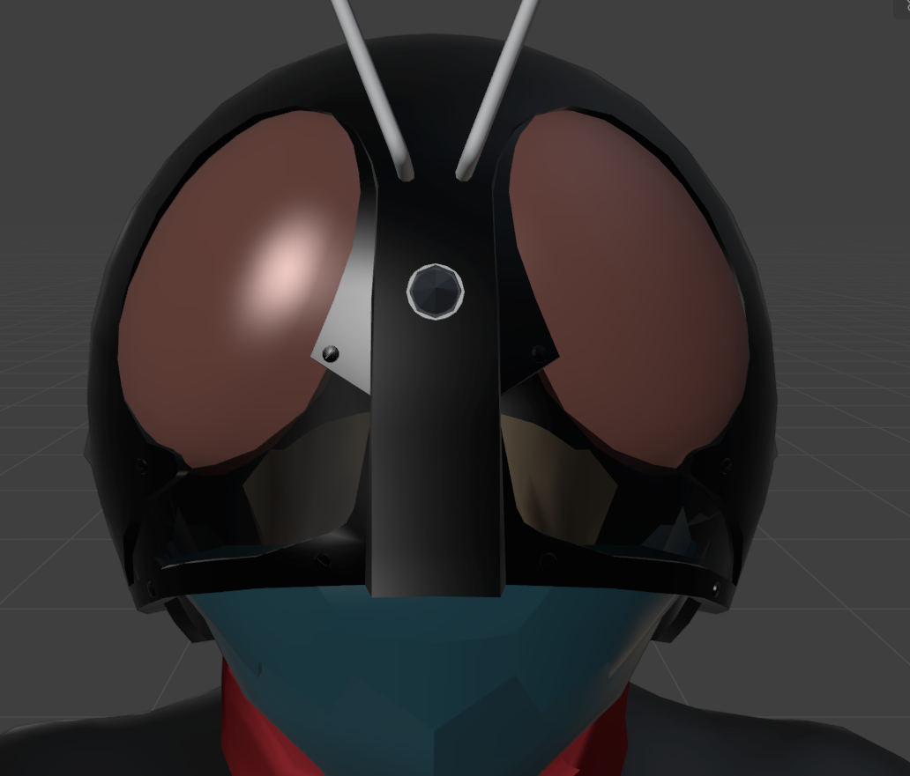
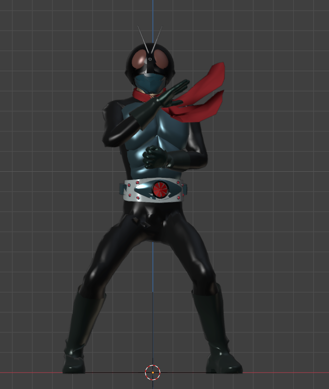

今回はこれまでのような漫画のキャラクターではなく（正確に言うと漫画のキャラクターなのですが、、、）、皆の憧れのヒーローである仮面ライダー１号をつくってみました！！これまで以上にこだわってみましたので、ぜひご覧ください！！
3Dモデルの全体像
作成した3Dモデルを前後左右の視点から見た画像を次に表示します。
全身の色やベルトは旧１号をモデルに作ってみました！！

工夫したところ
今回の仮面ライダー1号はできる限り原作に忠実に作成してみました。
一つ目としは、ベルトです！光沢や風車、ランプにも原作に忠実にこだわってみました。

また、仮面ライダーというだけあり、仮面をかぶっているという設定にも注目しました。
首元には、素肌や髪の毛が見えるようにしています！


次にこだわったポイントとしては、仮面の中の目の部分です！
仮面ライダー１号は、目と思われる場所の下のところが半透明になっていて、そこから見えるようになっていたようです！
今回のモデリングでは、その個所のマテリアルをセロハンにすることで、実際の仮面を意識しました。

仮面ライダー１号の返信ポーズ
今回は、作成したモデルに初めてボーンをつけてみました！！
これにより、以下のようなポーズをとることが可能になりました！
